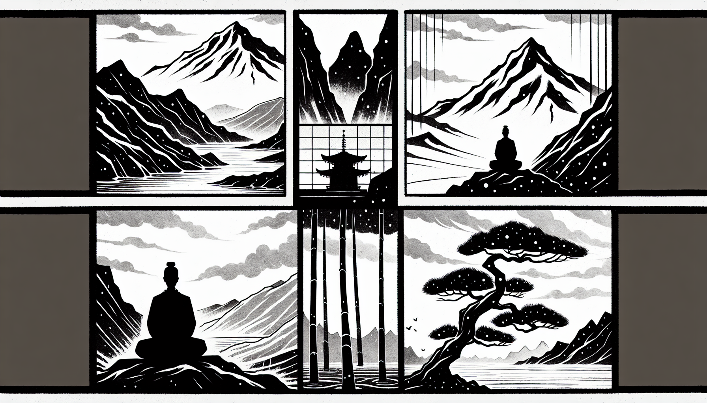

七十五巻 巻一覧
正法眼藏第30 看經
本ページは tools/gen_web_volumes.py が doc/正法眼蔵.txt から冒頭を抜粋して生成しています。図・詳細解説は今後の手編集で拡張できます。
出典（原文）: https://shomonji.or.jp/zazen/doc/genzou.html
この巻の位置づけ（学習メモ）
道元『正法眼蔵』七十五巻の第30篇「看經」です。禅籍・経典への引用や語の行間が重なりやすいので、一度ですべてを要約に還元しない読み方を推奨します。問答 Bot では巻スコープにこの題名を含めると応答が安定しやすいことがあります。
語彙の足場
- 題名語：巻題「看經」は、道元が本章で特に扱う論点の看板です。辞書義だけに固定せず、本文中の用例で意味を確かめます。
- 引用と典故：公案・経文の引用は、一字一句の照応（何に答えているか）を押さえると全体が見えやすくなります。
- 学び方：冒頭だけでも音読し、分からない箇所は印を付けて後から問うとよいです。
本文（冒頭・自動抜粋）
出典はリポジトリ内 doc/正法眼蔵.txt です。原文の参照元: https://shomonji.or.jp/zazen/doc/genzou.html
阿耨多羅三藐三菩提の修證、あるいは知識をもちゐ、あるいは經卷をもちゐる。知識といふは、全自己の佛祖なり。經卷といふは、全自己の經卷なり。全佛祖の自己、全經卷の自己なるがゆゑにかくのごとくなり。自己と稱ずといへども我儞の拘牽にあらず。これ活眼睛なり、活拳頭なり。
しかあれども念經、看經、誦經、書經、受經、持經あり。ともに佛祖の修證なり。しかあるに、佛經にあふことたやすきにあらず。於無量國中、乃至名字不可得聞（無量國の中に於て、乃至名字だも聞くこと得べからず）なり、於佛祖中、乃至名字不可得聞なり、於命脈中、乃至名字不可得聞なり。佛祖にあらざれば、經卷を見聞讀誦解義せず。佛祖參學より、かつかつ經卷を參學するなり。このとき、耳處、眼處、舌處、鼻處、身心塵處、到處、聞處、話處の聞、持、受、説經等の現成あり。爲求名聞故説外道論議（名聞を求めんが爲の故に、外道の論議を説く）のともがら、佛經を修行すべからず。そのゆゑは、經卷は若樹若石の傳持あり、若田若里の流布あり。塵刹の演出あり、虛空の開講あり。
藥山曩祖弘道大師、久不陞堂（藥山曩祖弘道大師、久しく陞堂せず）。
院主白云、大衆久思和尚慈晦（大衆久しく和尚の慈晦を思ふ）。
山云、打鐘著（打鐘せよ）。
院主打鐘、大衆才集（院主打鐘し、大衆才に集まる）。
山陞堂、良久便下座、歸方丈（山、陞堂し、良久して便ち下座し、方丈に歸る）。
院主隨後白云、和尚適來聽許爲衆説法、如何不垂一言（院主、後に隨つて、白して云く、和尚、適來爲衆説法を聽許せり、如何が一言を垂れざる）。
山云、經有經師、論有論師、爭怪得老僧（經に經師有り、論に論師有り、爭か老僧を怪得せん）。
曩祖の慈晦するところは、拳頭有拳頭師、眼睛有眼睛師なり。しかあれども、しばらく曩祖に拜問すべし、爭怪得和尚はなきにあらず、いぶかし、和尚是什麼師。
韶州曹谿山、大鑑高祖會下、誦法花經僧法達來參（韶州曹谿山、大鑑高祖の會下に、誦法花經僧法達といふもの來參す）。
高祖爲法達説偈云（高祖、法達が爲に説偈して云く）、
心迷法華轉、心悟轉法華、
（心迷は法華に轉ぜられ、心悟は法華を轉ず）
誦久不明己、與義作讎家。
（誦すること久しくして己れを明らめずは、義と讎家と作る）
無念念卽正、有念念成邪、
（無念なれば念は卽ち正なり、有念なれば念は邪と成る）
有無倶不計、長御白牛車。
（有無倶に計せざれば、長に白牛車を御らん）
しかあれば、心迷は法花に轉ぜられ、心悟は法花を轉ず。さらに迷悟を跳出するときは、法花の法花を轉ずるなり。
法達、まさに偈をききて踊躍歡喜、以偈贊曰（偈を以て贊じて曰く）、
經誦三千部、曹谿一句亡。
（經、誦すること三千部、曹谿の一句に亡す）
未明出世旨、寧歇累生狂。
（未だ出世の旨を明らめずは、寧んぞ累生の狂を歇めん）
羊鹿牛權設、初中後善揚。
（羊鹿牛權に設く、初中後善く揚ぐ）
誰知火宅内、元是法中王。
（誰か知らん火宅の内、もと是れ法中の王なることを）
そのとき高祖曰、汝今後方可名爲念經僧也（汝、今より後、方に名づけて念經僧と爲すべし）。
しるべし、佛道に念經僧あることを。曹谿古佛の直指なり。この念經僧の念は、有念無念等にあらず、有無倶不計なり。ただそれ從劫至劫手不釋卷、從晝至夜無不念時（劫より劫に至るも手に卷を釋かず、晝より夜に至りて念ぜざる時無し）なるのみなり。從經至經無不經（經より經に至りて經ならざる無し）なるのみなり。
第二十七祖東印度般若多羅尊者、因東印度國王、請尊者齋次（第二十七祖、東印度の般若多羅尊者、因みに東印度國王、尊者を請じて齋する次に）、
國王乃問、諸人盡轉經、唯尊者爲甚不轉（諸人盡く轉經す、ただ尊者のみ甚としてか轉ぜざる）。
祖曰、貧道出息不隨衆緣、入息不居蘊界、常轉如是經、百千萬億卷、非但一卷兩卷（貧道は出息衆緣に隨はず、入息蘊界に居せず、常に如是經を轉ずること、百千萬億卷なり、ただ一卷兩卷のみに非ず）。
般若多羅尊者は、天竺國東印度の種草なり。迦葉尊者より第二十七世の正嫡なり。佛家の調度ことごとく正傳せり。頂𩕳眼睛、拳頭鼻孔、拄杖鉢盂、衣法骨髓等を住持せり。われらが曩祖なり、われらは雲孫なり。いま尊者の渾力道は、出息の衆緣に不隨なるのみにあらず、衆緣も出息に不隨なり。衆緣たとひ頂𩕳眼睛にてもあれ、衆緣たとひ渾身にてもあれ、衆緣たとひ渾心にてもあれ、擔來擔去又擔來（擔ひ來り擔ひ去りて又擔ひ來る）、ただ不隨衆緣なるのみなり。不隨は渾隨なり。このゆゑに築著磕著なり。出息これ衆緣なりといへども、不隨衆緣なり。無量劫來、いまだ出息入息の消息をしらざれども、而今まさにはじめてしるべき時節到來なるがゆゑに不居蘊界をきく、不隨衆緣をきく。衆緣はじめて入息等を參究する時節なり。この時節、かつてさきにあらず、さらにのちにあるべからず。ただ而今のみにあるなり。
蘊界といふは、五蘊なり。いはゆる色受想行識をいふ。この五蘊に不居なるは、五蘊いまだ到來せざる世界なるがゆゑなり。この關棙子を拈ぜるゆゑに、所轉の經ただ一卷兩卷にあらず、常轉百千萬億卷なり。百千萬億卷はしばらく多の一端をあぐといへども、多の量のみにあらざるなり。一息出の不居蘊界を百千萬億卷の量とせり。しかあれども、有漏無漏智の所測にあらず、有漏無漏法の界にあらず。このゆゑに、有智の智の測量にあらず、有知の智の卜度にあらず。無智の知の商量にあらず、無知の智の所到にあらず。佛佛祖祖の修證、皮肉骨髓、眼睛拳頭、頂𩕳鼻孔、拄杖拂子、𨁝跳造次なり。
趙州觀音院眞際大師、因有婆子、施淨財、請大師轉大藏經（趙州觀音院眞際大師、因みに婆子有り、淨財を施して、大師に轉大藏經を請ず）。
師下禪牀、遶一匝、向使者云、轉藏已畢（師、禪牀を下りて、遶ること一匝して、使者に向つて云く、轉藏已畢ぬ）。
使者廻擧似婆子（使者、廻つて婆子に擧似す）。
婆子曰、比來請轉一藏、如何和尚只轉半藏（比來轉一藏を請ず、如何が和尚只だ半藏を轉ずる）。
あきらかにしりぬ。轉一藏半藏は婆子經三卷なり。轉藏已畢は趙州經一藏なり。おほよそ轉大藏經のていたらくは、禪牀をめぐる趙州あり、禪牀ありて趙州をめぐる。趙州をめぐる趙州あり、禪牀をめぐる禪牀あり。しかあれども、一切の轉藏は、遶禪牀のみにあらず、禪牀遶のみにあらず。
益州大隋山神照大師、法諱法眞、嗣長慶寺大安禪師。因有婆子、施淨財、請師轉大藏經（益州大隋山神照大師、法諱は法眞、長慶寺の大安禪師に嗣す。因みに婆子有り、淨財を施して、師に轉大藏經を請ず）。
師下禪牀一匝、向使者曰、轉大藏經已畢（師、禪牀を下りて一匝し、使者に向つて曰く、轉大藏經已畢ぬ）。
使者歸擧似婆子（使者、歸つて婆子に擧似す）。
婆子云、比來請轉一藏、如何和尚只轉半藏（比來轉一藏を請ず、如何が和尚只だ半藏を轉ずる）。
いま大隋の禪牀をめぐると學することなかれ、禪牀の大隋をめぐると學することなかれ。拳頭眼睛の團圝のみにあらず、作一圓相せる打一圓相なり。しかあれども、婆子それ有眼なりや、未具眼なりや。只轉半藏たとひ道取を拳頭より正傳すとも、婆子さらにいふべし、比來請轉大藏經、如何和尚只管弄精魂（比來轉大藏經を請ず、如何が和尚只管に精魂を弄する）。あやまりてもかくのごとく道取せましかば、具眼睛の婆子なるべし。
高祖洞山悟本大師、因有官人、設齋施淨財、請師看轉大藏經。大師下禪牀向官人揖。官人揖大師。引官人倶遶禪牀一匝、向官人揖。良久向官人云、會麼（高祖洞山悟本大師、因みに官人有り、齋を設け淨財を施し、師に看轉大藏經を請ず。大師、禪牀より下りて、官人に向つて揖す。官人、大師を揖す。官人を引いて倶に禪牀を遶ること一匝し、官人に向つて揖す。良久して、官人に向つて云く、會すや）。
官人云、不會。
大師云、我與汝看轉大藏經、如何不會（我れ汝が與に看轉大藏經せり、如何が不會なる）。
それ我與汝看轉大藏經、あきらかなり。遶禪牀を看轉大藏經と學するにあらず、看轉大藏經を遶禪牀と會せざるなり。しかありといへども、高祖の慈晦を聽取すべし。
この因緣、先師古佛、天童山に住せしとき、高麗國の施主、入山施財、大衆看經、請先師陞座（山に入りて財を施し、大衆看經し、先師に陞座を請ずる）のとき擧するところなり。擧しをはりて、先師すなはち拂子をもておほきに圓相をつくること一匝していはく、天童今日、與汝看轉大藏經。
便擲下拂子下座（便ち拂子を擲下して下座せり）。
いま先師の道處を看轉すべし、餘者に比準すべからず。しかありといふとも、看轉大藏經には、壹隻眼をもちゐるとやせん、半隻眼をもちゐるとやせん。高祖の道處と先師の道處と、用眼睛、用舌頭、いくばくをかもちゐきたれる。究辨看。
曩祖藥山弘道大師、尋常不許人看經。一日、將經自看、因僧問、和尚尋常不許人看經、爲甚麼却自看（曩祖藥山弘道大師、尋常人に看經を許さず。一日、經を將て自ら看す、因みに僧問ふ、和尚尋常、人の看經するを許さず、甚麼としてか却つて自ら看する）。
師云、我只要遮眼（我れは只だ遮眼せんことをを要するのみ）。
僧云、某甲學和尚得麼（某甲和尚を學してんや）。
師云、儞若看、牛皮也須穿（儞若し看せば、牛皮もまた穿るべし）。
いま我要遮眼の道は、遮眼の自道處なり。遮眼は打失眼睛なり、打失經なり、渾眼遮なり、渾遮眼なり。遮眼は遮中開眼なり、遮裡活眼なり、眼裡活遮なり、眼皮上更添一枚皮（眼皮上更に一枚の皮を添ふ）なり。遮裡拈眼なり、眼自拈遮なり。しかあれば、眼睛經にあらざれば遮眼の功徳いまだあらざるなり。
牛皮也須穿は、全牛皮なり、全皮牛なり、拈牛作皮なり。このゆゑに、皮肉骨髓、頭角鼻孔を牛㹀の活計とせり。學和尚のとき、牛爲眼睛（牛を眼睛と爲す）なるを遮眼とす、眼睛爲牛（眼睛を牛と爲す）なり。
冶父道川禪師云、
億千供佛福無邊、
爭似常將古教看。
白紙上邊書墨字、
請君開眼目前觀。
（億千の供佛福無邊なり、爭か似かん、常に古教を將て看ぜんには。白紙上邊に墨字を書す、請すらくは君、眼を開いて目前に觀んことを。）
しるべし、古佛を供すると古教をみると、福徳齊肩なるべし、福徳超過なるべし。古教といふは、白紙の上に墨字を書せる、たれかこれを古教としらん。當恁麼の道理を參究すべし。
雲居山弘覺大師、因有一僧、在房内念經。大師隔窓問云、闍梨念底、是什麼經（雲居山弘覺大師、因みに一僧有り、房の内に在つて念經す。大師、窓を隔てて問うて云く、闍梨が念底、是れ什麼の經ぞ）。
僧對曰、維摩經。
師曰、不問儞維摩經、念底是什麼經（儞に維摩經を問はず、念底は是れ什麼の經ぞ）。
此僧從此得入（此の僧、此れより得入せり）。
大師道の念底是什麼經は、一條の念底、年代深遠なり、不欲擧似於念（念に擧似せんとは欲はず）なり。路にしては死蛇にあふ、このゆゑに什麼經の問著現成せり。人にあふては錯擧せず、このゆゑに維摩經なり。おほよそ看經は、盡佛祖を把拈しあつめて、眼睛として看經するなり。正當恁麼時、たちまちに佛祖作佛し、説法し、説佛し、佛作するなり。この看經の時節にあらざれば、佛祖の頂𩕳面目いまだあらざるなり。
図解（4コマ・AI生成）
教義の根拠は本文・出典に従い、漫画は比喩の補助に留めてください。

深掘り（読解のコツ）
- 道元文は定義の羅列に見えても、多くの場合誤解への遮断と正伝の姿勢が背骨になっています。
- 「当体」「現成」「即」などの語が出たら、その巻独自の差別相にどう接続しているかをメモしておくとよいです。